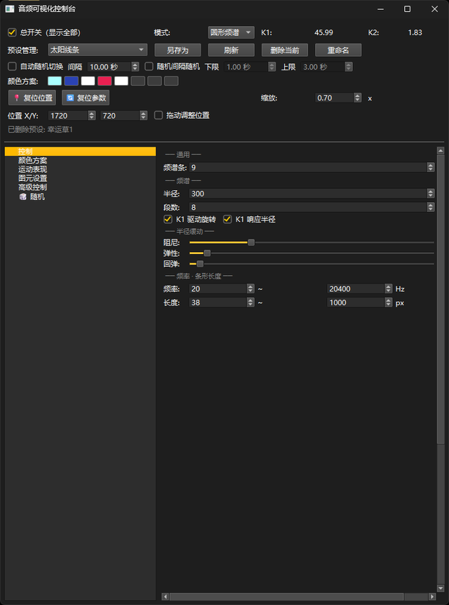
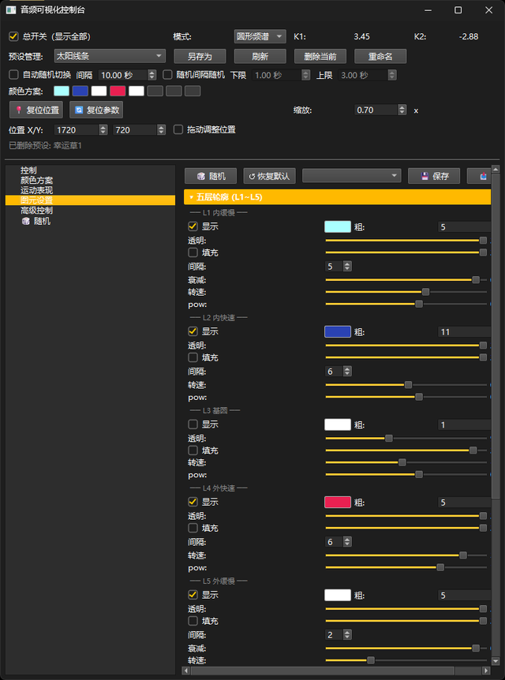
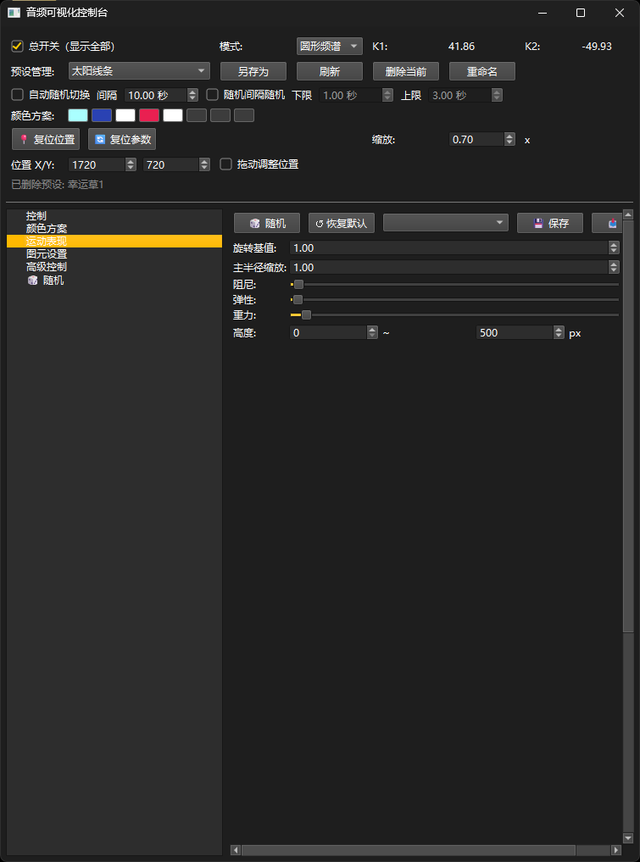
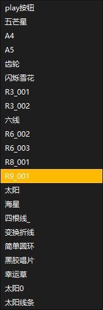
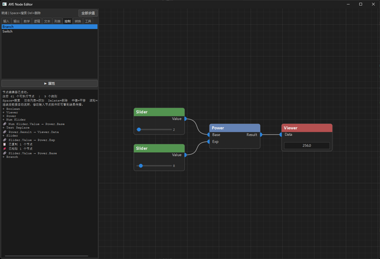

这个程序最早的出发点其实很简单: 我看到玩音乐的朋友买了氛围小灯, 但灯的频率和她的音乐没有联系, 所以我想做一个可视化程序, 让她的音乐视频能够通过屏幕发出的光更有氛围感. 在这个基础上, 我也想测试一下 pygame 在实时渲染上的性能边界, 以及它到底能做出多强的视觉反馈. 后来在反复尝试中, 我决定把它做成一个"自己可以编辑, 自己可以玩"的音乐可视化工具, 而不是只做一次性的演示效果.

它监听的是 Windows 系统音频输出, 所以只要本机在播放音乐, 画面就会立即响应, 不需要额外导入音频文件. 为了让每一首歌都能被"重新诠释", 我把大量参数都做成了可调, 包括频率范围、条形长度、颜色和节奏相关控制. 每组参数的基础上下限, 我都在性能和画面效果之间反复找平衡 —— 范围太保守会不够有冲击, 范围太激进又会拖性能或让画面失真. 除了手动调参, 我还加了随机控制与自动变化机制, 而且可以指定"哪些属性参与随机", 包括图元数量这类关键项 (因为图元太多、图形过于复杂时, 画面反而容易显得混乱).

在视觉形态上, 这个程序也经历了一个逐步迭代的过程: 最初只是最基本、最常见的频谱条, 后来我把它改成了环状结构, 让多列频谱围成圆环. 再往后, 我把每个频谱条的端点连成 B 样条曲线, 并加入了间隔取样设计, 用更少的控制点换来更平滑的曲线表现. 在这基础上, 我又尝试用闭合样条区域生成多层封闭填充图案, 再叠加不同端点之间的直接连线效果, 让画面在节奏之外也有更强的结构层次感.

在动态表现上, 我比较在意"跟节奏走"但不"乱跳". 目前放大和旋转的驱动, 会参考平均响度变化率的 pow 结果来做响应, 这样能把音乐里的起伏感和节拍变化放大出来, 同时尽量避免画面失控. 这个平衡点我调了很久, 也是这个项目里我最享受的一部分.

功能层面目前已经具备完整的预设工作流: 可以另存预设、刷新列表、删除当前预设、重命名当前预设, 也支持多预设自动随机切换 (固定间隔或随机区间). 我也手动调了几组比较有代表性的风格化预设, 并给它们取了更形象的名字, 方便在不同氛围之间快速切换. 这让我在不同风格之间切换时更高效, 也更适合长时间播放时自动演化.
中间我也尝试过一个更"理想化"的方向: 自动分离乐器和人声, 然后走多轨道控制, 让不同元素驱动不同视觉层. 但实际测试下来, 这部分效果并不理想. 核心问题是实时分离的运算开销太大, 难以做到每一帧都稳定流畅. 如果拉大分析间隔来换性能, 画面和音乐之间的同步感又会明显丢失. 权衡之后, 我把这条路暂时放下, 转而采用更可靠的方案: 先做预分轨处理, 再把不同轨道接入不同的控制系统中.

后续我准备把预设设置界面升级为节点式自由接线的控制方式. 这个方向还在调试中, 因为我想先搭建一个自己熟悉、可复用的节点编程基础框架. 等这套编辑器稳定后, 不仅能用于这个可视化程序, 也能复用到我后续的其他项目里.
项目后续迭代中, 基础图形引擎已从 pygame 迁移到 OpenGL, 获得了更强的实时渲染性能, 并顺手解决了旧版本连线端点只能是方形的问题.
后续版本中, 视觉主题切换机制得到增强: 主题之间不再硬切换, 而是让单个图元按序出现或消失, 并通过数值差值过渡已有图元状态, 整体呈现出更顺滑的主题切换效果. 同时新增了完全随机主题生成功能, 可无限生成新的视觉主题. 平滑主题切换与随机主题生成, 体现了主题之间顺滑过渡与图元差值过渡的新视觉效果.
新增加的柔体主体效果, 融入一些物理效果的模拟.